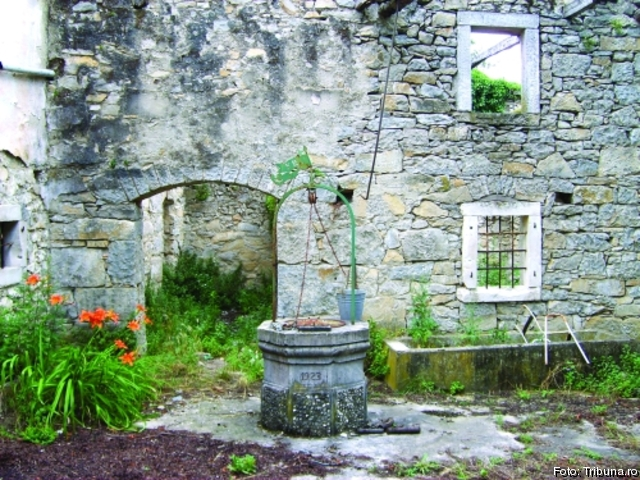

Așa cum am semnalat, un grup de muzeografi ai Muzeului ASTRA a efectuat o deplasare în Croația, în scopul realizării unui studiu despre comunitatea istroromână. Istroromânii trăiesc, în principal, în două sate: Jeiăni și Sușnevița, la câteva zeci de kilometri de orașele Opatija, Rjeka și Pola. Pe lângă satele menționate, există familii de istroromâni și în localități precum Matulji, Mune, Sucodru, Nova Vas, Labin și altele. Un aspect aparte al zonei – al Istriei, în general – îl reprezintă urmele războiului. "Sute de case sunt abandonate, multe dintre ele fiind în parte dărâmate sau stând să se prăbușească în orice moment". Iată parte din notițele luate de sibieni pe parcursul deplasării din Croația.
 Prezența delegației noastre la croați este rezultatul unui proiect finanțat de AFCN. Coordonatorul Elena Potoroacă spune că proiectul "Istro-românii – consolidarea și permanentizarea valorilor și tradițiilor" se va materializa printr-o expoziție, un film documentar, un volum de studii. Mai mult, sibienii au invitat un ansamblu de dansuri tradiționale din localitatea Žejane pentru a susține un spectacol folcloric menit să evidențieze asemănările ce ne leagă de istroromâni.
"Comunitatea istroromână totalizează, în prezent, câteva sute de oameni," spune reprezentantul muzeului, amintind că o parte importantă a acestei comunități din Croația a ales să trăiască în alte țări. Supraviețuirea comunității este uimitoare, dat fiind faptul că ea nu a fost privită ca o minoritate clar definită. Adăpostiți într-o zonă de munți calcaroși, cu o pădure bogată, nu departe de Marea Adriatică, istroromânii și-au transmis, de secole, valorile care îi definesc.
Muzeografii sibieni au constatat că cea mai mare piedică pe care au întâmpinat-o istroromânii a fost lipsa unor instituții care să le apere statutul de minoritate și lipsa învățământului în limba maternă, situație în care istroromânii au învățat croata sau italiana. Din notele de documentare luate de sibieni am mai reținut că istroromânii nu se cred nici români, nici croați, nici italieni.
Dialectul istroromân este trecut, de către UNESCO, pe lista limbilor aflate în pericol să dispară. De asemenea, Ministerul croat al Culturii a declarat dialectul istroromân drept un bun cultural nematerial, fapt pentru care l-a inclus în "Lista bunurilor culturale nemateriale protejate."
"Întâlnirile cu ambasadoarea României în Croația, Cristina Popa, cu primarul comunei Matulji, precum și cu directorul cultural al regiunii Istria, Mladen Dušman, ne-au convins că există un interes crescut pentru comunitatea istroromână și că pot fi susținute inițiative de genul celei demarate de noi cei de la Complexul Național Muzeal ASTRA anume de a organiza o școală de Vară, în cadrul căreia să fie realizate cursuri în dialectul istroromân și ateliere în care locuitorii din zonă să fie stimulați să scrie în propria lor limbă," spune Elena Potoroacă.
"Există foarte puține tradiții active. Oamenii nu spun că vorbesc istroromâna, ci un dialect numit "jeianschi" - în localitatea Jeiăni – sau "vlåșchi" - în Sușnevița și în celelalte localități. Sunt foarte ospitalieri, lipsiți de tensiune socială și dornici de a vorbi cu românii. Curioși să știe cuvinte românești, pun întrebări și fac comparații cu propriul vocabular. Dialogul cu ei reprezintă prilejul unui studiu lingvistic extrem de interesant, cu atât mai mult cu cât cei mai mulți vorbesc și croata și italiana. Semne ale vizitelor altor grupuri de români există la tot pasul, localnicii arătându-ne cărți, reviste, discuri sau casete audio în limba română. Nu scriu și nici nu citesc în istroromână sau în română," sunt alte note din consemnările luate la fața la fața locului. De fapt, reprezentanții Muzeului ASTRA s-au întors în Sibiu cu un important material documentar: zeci de interviuri cu localnici, schițe ale așezărilor și ale tipurilor de arhitectură, observații legate de costumul tradițional, de muzică și de viața comunității, câteva mii de fotografii cu oameni și locuri. Toată această documentație va fi studiată în amănunt și se va trece la celelalte etape: expoziția, concertul, colecția de articole și filmul documentar. Proiectul de cercetare a comunității istroromâne nu reprezintă un demers izolat, muzeografii Complexului Național Muzeal ASTRA, susținuți de către directorul general al instituției, prof. dr. Corneliu Bucur, manifestând un interes deosebit pentru existența comunităților românești din afara granițelor țării.
Adrian Popescu
June 25, 2008
© 2008 Tribuna